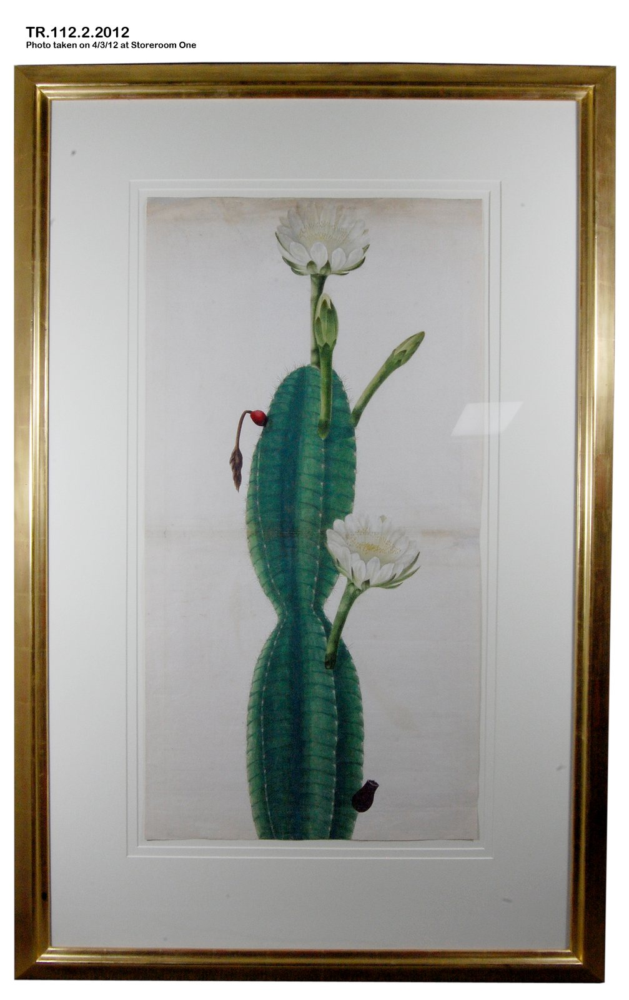

今日一句话总览
全球视觉艺术机构正在同时扩展两种“基础设施”：一端是古根海姆阿布扎比、巴西新博物馆和首尔艺博会这样的实体网络，另一端是 AI 导览、网络艺术档案和来源研究工具构成的数字网络。与扩张并行的，则是劳动条件、平台审查、文化归属与公共健康责任等制度性问题。
信息来源与检索范围
- 检索时间：2026-08-03 09:00–09:18（中国标准时间 CST，UTC+8）。
- 覆盖地区：东亚、东南亚、南亚、西亚、欧洲、北美、拉丁美洲、非洲；重点核验美国、英国、法国、西班牙、中国大陆、中国台湾、新加坡、韩国、日本、阿联酋、加纳、巴西等地信息。
- 主要来源：ARTnews、Artforum、The Art Newspaper、NPR、ArchDaily、Colossal、e-flux，以及 Whitney Museum、Singapore Art Museum、New Taipei City Art Museum、Hiroshima MOCA 等机构信息页。
- 时间范围：优先采用过去 72 小时（7 月 31 日至 8 月 3 日）发布的信息；因周末机构新闻较少，展览与重要背景扩展至过去 7 天（7 月 27 日起），相应条目已注明。
- 访问失败 / 不确定项：The Met 新闻页触发 Vercel 安全检查（HTTP 429），故未使用无法核验的展期细节；Smithsonian Magazine 页面触发 Cloudflare（HTTP 403），考古信息仅采用其可见标题并以同主题公开报道作背景，不写入未核验细节；Google 普通搜索与浏览器新闻页出现 429/超时，已改用 Google News RSS 定位并回到原始来源核验。古根海姆阿布扎比本轮未找到可直接访问的馆方新闻稿，开馆日以 ArchDaily 对阿布扎比文化与旅游部公告的报道为准。
开放图像说明
- 配图：《开花的仙人掌，约1800年》；The Metropolitan Museum of Art Open Access，Public Domain。
- 配图用于补充视觉艺术史与博物馆公共叙事，不是新闻事件现场照片。
一、必看头条（5 条）
1. 古根海姆阿布扎比确定 2026 年 12 月 11 日开放
- 地区 / 机构：阿联酋阿布扎比 / Guggenheim Abu Dhabi、Saadiyat Cultural District
- 来源：ArchDaily
- 时间：2026-07-28（过去 7 天扩展项）
- 事件摘要：阿布扎比文化与旅游部宣布，这座由已故建筑师 Frank Gehry 设计、2006 年首次公布的博物馆将于 12 月 11 日开放。建筑总面积约 8 万平方米，含约 1.16 万平方米室内展厅与约 2.3 万平方米室外展示空间；馆藏强调中东、亚洲、北非与全球现代及当代艺术的交叉叙事。
- 为什么重要：它不仅是“新馆开门”，而是海湾地区以收藏、建筑、旅游和知识生产重组全球艺术地理的长期项目进入落地阶段。
- 可延伸观察：首展如何避免以西方现代主义为默认坐标；政府所有的藏品与古根海姆品牌、策展自主权之间如何协商；建筑与劳工历史会否进入机构自我叙述。
2. AI 来源研究工具把 4 万余条纳粹掠夺艺术品记录变成可问答数据库
- 地区 / 机构：美国加州 / Santa Clara University 研究团队
- 来源：ARTnews
- 时间：2026-07-31 17:48 UTC（过去 72 小时）
- 事件摘要：三位商学院研究者推出 AI Provenance Research 聊天工具，首阶段整合巴黎 Jeu de Paume 相关数据库中 4 万余件在 1940—1944 年间从法国、比利时犹太人手中被掠夺的艺术品记录，并尝试跨档案、目录与语言降低检索门槛。
- 为什么重要：这是 AI 在艺术领域从“生成图像”转向“证据检索”的典型案例；潜在价值在于帮助家族、研究者和小型机构进入原本高度专业化的来源研究。
- 可延伸观察：答案能否追溯到逐条原始档案、错误匹配由谁负责、训练与检索范围是否透明；团队也提出未来可用于原住民文物归还，需警惕不同历史情境被同一技术框架扁平化。
3. 巴西收藏家 Bernardo Paz 计划在 Inhotim 隔壁建设新博物馆与植物园
- 地区 / 机构：巴西 Minas Gerais / Brumadinho
- 来源：The Art Newspaper
- 时间：2026-07-31 16:57 UTC（过去 72 小时）
- 事件摘要：项目占地约 311 英亩，首批展馆预计 2027 年 9 月开放，规划最多约 40 座展馆，展示 Paz 约 3,000 件个人收藏。首阶段涉及 Michael Heizer、Anna Maria Maiolino、Sonia Gomes；策展团队包括 Allan Schwartzman、Paulo Miyada、Fernanda Arruda。
- 为什么重要：它复制并竞争性地延伸了 Inhotim 的“艺术馆群＋植物景观”模式，可能进一步把巴西内陆塑造成全球目的地型当代艺术集群。
- 可延伸观察：报道所述约 1.95 亿美元成本被项目方称为“夸大”，实际预算仍未披露；私人收藏公共化、当地社区收益、矿业地区生态政治和与 Inhotim 的关系都值得持续核查。
4. 加纳数字出版平台 Manju Journal 转向非营利文化基础设施
- 地区 / 机构：加纳阿克拉 / New Africa Cultural Initiative（NACI）
- 来源：ARTnews
- 时间：2026-07-31 09:00 UTC（过去 72 小时）
- 事件摘要：2017 年创立、长期记录非洲当代艺术、时尚与摄影的 Manju Journal，正式推出非营利延伸机构 NACI，重点为研究、跨学科合作、教育和社区主导实践建立“本地扎根、可持续”的支持体系；首个阿克拉纺织工作坊公开征集截至 8 月 4 日。
- 为什么重要：它显示文化媒体不再满足于“替现场发声”，而开始建设驻留、教育、档案和资源分配机制，争取让艺术资本与知识留在非洲大陆。
- 可延伸观察：资金来源与治理结构、跨国合作中的议程主导权、数字档案如何真正转化为艺术家长期收入与机构能力。
5. V&A 员工投票支持罢工，明星级“开放库房”背后的劳动条件被推到台前
- 地区 / 机构：英国伦敦 / Victoria and Albert Museum 四个场馆
- 来源：Artforum
- 时间：2026-07-30 16:34 UTC（过去 7 天扩展项）
- 事件摘要：Prospect 工会成员投票中，83% 支持罢工，95% 支持低于罢工级别的行动；V&A East Storehouse 参与投票者全部支持行动。诉求涉及休息与饮水、厕所使用、伦敦生活工资认证、加薪及节假日工资。
- 为什么重要：Storehouse 的“预约看藏品”被视为收藏开放的新范式，但新型观众体验若依靠不可持续的前线劳动，就会暴露机构创新的伦理缺口。
- 可延伸观察：V&A 与工会谈判、实际行动日期、其他英国博物馆是否出现连锁反应，以及“开放库房”模式是否重新配置人力成本。
二、最新展览与展讯（8 条）
1. Whitney：`artport: A History of Internet Art`
- 地点 / 时间：纽约 Whitney Museum；2026-11-21 开幕，馆内与线上同步（馆方页面 7 月 30 日进入新闻检索）。
- 来源：Whitney Museum
- 主题与亮点：纪念 artport 网络艺术委托平台 25 周年，汇集 100 余件委托作品，覆盖 Gate Pages、长期 commissions、Sunrise/Sunset 与 On the Hour；展陈用“漂浮浏览器窗口”把线上史转译成实体空间，并含 Operator 的生成式编舞现场演出。
- 适合关注：数字艺术史研究者、网络艺术保存人员、交互设计师，以及思考“网页作品如何进美术馆”的策展人。
2. 新北市美术馆：`民间／摄影：纪录性观看与现实主义的回响`
- 地点 / 时间：中国台湾新北；2026-07-18—11-15。
- 来源：e-flux / 新北市美术馆
- 主题与亮点：展览拒绝把“民间”直接等同于 folk、vernacular 或 popular，而把它视为由地方网络、日常实践、宗教、出版媒介与图像流通持续构成的社会空间，回看台湾摄影史中的纪录观看。
- 适合关注：摄影史、东亚视觉文化、地方志与社区影像教学者。
3. Singapore Art Museum：Maria Taniguchi `Afterimage`
- 地点 / 时间：新加坡 Tanjong Pagar Distripark；2026-07-24—11-22。
- 来源：e-flux / Singapore Art Museum
- 主题与亮点：艺术家在新加坡的首个美术馆个展，以 2008 年持续至今的“brick paintings”为核心，讨论重复、时间与劳动；画布倚墙的方式也把绘画表面、雕塑物和建筑关系连在一起。
- 适合关注：绘画实践者、劳动美学研究者、研究东南亚极简主义与材料性的观众。
4. Hiroshima MOCA：第 12 届广岛艺术奖纪念展 `Mel Chin`
- 地点 / 时间：日本广岛；2026-07-25—10-12。
- 来源：e-flux / Hiroshima MOCA
- 主题与亮点：Mel Chin 在日本的首次个展，汇集雕塑、绘画、影像、动画、电子游戏、公共装置及为广岛创作的新作，强调环境议题、社区协作与科学方法。
- 适合关注：社会参与艺术、公共艺术、环境艺术及跨学科教育项目设计者。
5. Museum of Fine Arts St. Petersburg：`New African Masquerades`
- 地点 / 时间：美国佛罗里达州圣彼得堡；2026-08-15—2027-01-03。
- 来源：Colossal
- 主题与亮点：四位来自尼日利亚、布基纳法索、塞拉利昂和喀麦隆的艺术家以面具、全身服饰、摄影、影像和沉浸媒介呈现西非 masquerade 的当代演化；由 New Orleans Museum of Art 与达喀尔 Musée des Civilisations noires 合作组织。
- 适合关注：纺织、表演、非洲当代艺术、非物质文化遗产展示与去殖民策展研究者。
6. Crow Museum：`Unseen Worlds: Southeast Asian Textiles`
- 地点 / 时间：美国得州 Richardson / UT Dallas；2026-08-22—2027-06-20。
- 来源：Local Profile（汇总馆方秋季发布）
- 主题与亮点：约 150 件来自柬埔寨、印度尼西亚、老挝、马来西亚、缅甸、泰国、越南的纺织、首饰与物件，以 naga（那伽）串联佛教、萨满、泛灵与变形主题；免费开放。
- 适合关注：纺织设计、东南亚物质文化、私人收藏公共展示与馆校合作人员。
7. Remai Modern：`Carried by rivers, held by lands`
- 地点 / 时间：加拿大 Saskatoon；2026-07-31—12-06。
- 来源：e-flux / Remai Modern
- 主题与亮点：历时多年的交流与场域回应项目进入群展阶段，Cooking Sections、Kultivator、Katarina Pirak Sikku、Marianne Nicolson 等从生态、文化与经济流动讨论土地和水系。
- 适合关注：生态策展、原住民合作、慢研究及长期项目评估者。
8. Kiaf SEOUL 第 25 届
- 地点 / 时间：韩国首尔 COEX；2026-09-02—09-06，与 Frieze Seoul 同场期。
- 来源：Artforum
- 主题与亮点：175 家画廊来自 18 个国家和地区；Kiaf PLUS 聚焦新兴艺术家与画廊，Kiaf HIGHLIGHTS 以材料性、生态和东方哲学为线索。新任创意总监 Kuho Jung 将负责品牌、空间与策展策略。
- 适合关注：亚洲艺术市场、艺博会空间设计、新兴画廊与跨城合作研究者。
三、艺术事件 / 机构动态 / 市场与政策（6 条）
1. 第 26 届悉尼双年展任命 Low Kee Hong 为艺术总监
- 来源：Ocula，时间：2026-08-02（过去 24 小时）。
- 动态：曾参与创立新加坡双年展、长期领导西九龙文化区表演艺术发展的 Low 将策划 2028 年展览。
- 意义：亚洲策展人与跨学科表演经验进入国际双年展核心岗位，可能推动双年展从“作品清单”转向城市网络、现场性与长期公共项目。
2. 洛杉矶 Watts Towers 园区 2,200 万美元扩建计划 10 月动工
- 来源：Artforum，时间：2026-07-30（过去 7 天扩展项）。
- 动态：计划新增约 3 万平方英尺绿地、气候韧性景观和步道，目标在 2028 洛杉矶奥运会前完成；但塔体保护工程剩余约 10%、仍缺 41.2 万美元。
- 意义：公共艺术“周边更新”与作品本体保护资金不能混为一谈；对城市文化投资而言，这是显眼新建与隐性维护失衡的案例。
3. 上海多家机构成立“博物馆疗愈联盟”
- 来源：Artforum，时间：2026-07-30（过去 7 天扩展项）。
- 动态：上海科技馆、上海自然博物馆、多伦现代美术馆、Being Art Museum 与上海市精神卫生中心等拟建立医院转介机制，并以讲座、纪录片、戏剧等支持失智症及其他心理健康需求，后续将评估效果。
- 意义：博物馆从泛化的“疗愈宣传”迈向医疗转介和效果评估；关键是隐私、专业边界与循证方法。
4. 艺术家 Emma Shapiro 依据欧盟《数字服务法》挑战 Instagram 封号
- 来源：ARTnews，时间：2026-07-31 20:50 UTC（过去 72 小时）。
- 动态：其反对身体性别歧视的项目账号 @nipeople 于 2025 年被永久删除。律师向西班牙监管机构投诉，指 Meta 未充分说明理由，也未提供有效、客观的内部申诉程序。
- 意义：艺术家的“平台可见性”已经是作品保存、言论自由和职业基础设施问题，而不只是社交媒体运营问题。
5. Valentin Noujaïm 获首届地中海影像艺术制作资助
- 来源：Artforum，时间：2026-07-30。
- 动态：Han Nefkens Foundation 提供 2.5 万欧元支持新影像作品；Noujaïm 的创作往返纪录与虚构，关注权力、监控、城市空间、迁徙与归属。
- 意义：资助明确投向“制作”而非只授予荣誉，且以地中海为跨国区域，有助于中生代影像艺术家承担研究周期更长的项目。
6. 4 万年前猛犸象牙微型鸟雕在德国洞穴出土
- 来源：Smithsonian Magazine（可见标题，正文访问受限），时间：2026-07-31。
- 动态：公开报道指两件仅拇指甲大小的鸟形雕刻出土于德国洞穴，年代约 4 万年。
- 意义：微型尺度要求我们重新理解史前图像并非都服务于宏大仪式；便携物、触觉观看与精细材料技术同样构成早期视觉文化。因原页受限，本报不扩写物种、精确层位等未直接核验信息。
四、技术、知识与新观念（5 条）
1. Dataland 把“AI 美术馆”变成可体验、也可审计的命题
- 来源：NPR，时间：2026-07-29（过去 7 天扩展项）。
- 内容：Refik Anadol 在洛杉矶的 Dataland 以定制模型处理博物馆档案、实验室和亚马孙采集的图像声音；作品结合实时生成、佩戴设备生物数据、声音、气味与味觉，艺术家称人与机器是“50/50 合作者”。
- 启发：沉浸感不应替代数据说明。策展文本应交代数据授权、模型边界、能耗与自然图像采集关系，让“机器合作者”成为可讨论的方法，而非品牌口号。
2. Cleveland Museum of Art：AI 在馆内本地运行、只以馆藏训练
- 来源：blooloop，时间：2026-07-28（过去 7 天扩展项）。
- 内容：重做后的 ArtLens Reimagined 占地约 1 万平方英尺，设 21 个互动项目；Infinite Landscape 实时延展馆藏风景，Art Mirror 用馆藏构成观众肖像。馆方称模型均在馆内本地运行，只使用馆藏数据，以控制隐私、能耗和可靠性。
- 启发：这是比“接入通用大模型”更具机构责任的技术路径；本地模型、限定语料和跨策展—教育—保育—技术团队协作，可成为博物馆 AI 项目的最低设计基线。
3. Harvard Art Museums 用生成式 AI 让庞巴度夫人肖像“开口说话”
- 来源：ARTnews，时间：2026-07-29（过去 7 天扩展项）。
- 内容：营销试验把 François Boucher 1750 年肖像动画化并制作聊天机器人，目标是提升参与度和会员转化；馆方讨论也明确提出真实性、诠释权和“谁决定画中人说什么”等问题。
- 启发：生成式角色不能被当成史料本身。更稳妥的界面应把可考证事实、策展推断和模型虚构分层显示，并保留来源链接。
4. Whitney 用 25 年 artport 说明：网络艺术保存就是策展
- 来源：Whitney Museum，信息更新可见于 2026-07-30。
- 内容：100 余件作品跨越代码、数据可视化、非线性叙事、游戏、世界构建和 AI 驱动网络艺术。
- 启发：保存网络艺术不能只截屏；需要同时记录浏览器环境、依赖服务、交互逻辑、时间行为和艺术家的迁移授权。实体展厅只是访问层之一。
5. “民间”不急于翻译：摄影史中的概念保留策略
- 来源：e-flux / 新北市美术馆，时间：2026-07-30。
- 内容：展览特意保留拼音 Minjian，让概念对 folk / vernacular / popular 的快速对译保持抵抗。
- 启发：这是视觉文化研究与国际传播的重要方法：翻译不只是找同义词，也可以通过保留原词、加注历史语境，避免地方知识被英语分类学过早收编。
五、今日组合观察
- **“新博物馆”竞争已从地标建筑转向完整生态系统。** 古根海姆阿布扎比同时配置艺术科技中心、档案、图书馆与保育实验室；Paz 的巴西项目把展馆、植物园与艺术家专馆结合；NACI 则从数字媒体转向研究、教育和社区网络。共同点是：单体展馆不再足够，机构正争夺知识生产、人才与长期关系。
- **AI 的关键分野不是“用或不用”，而是证据链是否可见。** Santa Clara 来源研究工具处理可追溯档案，Cleveland 采用本地模型和限定馆藏语料；相较之下，Harvard 的历史人物聊天与 Dataland 的沉浸生成更需要清楚标注虚构、授权和训练材料。今天的四条技术新闻共同支持这一判断。
- **观众体验创新必须把劳动者也视为“用户”。** V&A Storehouse 的开放收藏建立在员工饮水、如厕和轮班条件之上；Watts Towers 的景观扩建与塔体保育资金缺口并存。机构若只设计前台体验而忽略维护者、保育者和社区，创新会迅速转化为伦理风险。
- **亚洲机构正在从“被展示地区”转为方法输出者。** Low Kee Hong 领导 2028 悉尼双年展，首尔 Kiaf 以材料、生态与东方哲学组织重点单元，新北市美术馆用“不完全翻译”重写摄影史，新加坡 SAM 从劳动和时间讨论绘画。这些并非单一“亚洲主题”，而是在输出策展方法与概念工具。
- **艺术的社会作用正被要求从宣言走向机制。** 上海“博物馆疗愈联盟”引入医院转介和效果评估，Mel Chin 展览强调科学与社区协作，Remai Modern 采用多年交流和场域回应；“疗愈”“生态”“参与”是否有效，越来越取决于合作时长、评估和资源分配，而非展览标题。
六、给创作者 / 策展人 / 艺术教育者的启发
- **给创作者：**
- 若使用生成式 AI，把数据来源、人的决策点、模型输出与后期编辑写进作品说明；“可复核的方法”会成为作品可信度的一部分。
- 关注小尺度和长时间：史前微雕、Taniguchi 的重复劳动、网络作品的时间行为都说明，作品不必依靠巨型体量才能形成历史密度。
- 平台型作品应同步保存原文件、元数据、发布记录和申诉证据，避免账号删除等同于作品消失。
- **给策展人 / 空间运营者：**
- 试用 Cleveland 的三条底线：本地运行、限定语料、跨部门共同设计；再增加公开的数据与能耗说明。
- 把保育、员工休息、无障碍和社区回报列入“观众体验”预算，而非完工后的补丁。
- 展示跨文化材料时，可采用 Minjian 式“保留原词＋解释语境”，也应像西非 masquerade 项目那样把表演、社区、影像档案与物件并置，避免把活传统冻结为造型标本。
- **给艺术教育者：**
- 设计“AI 角色可信度”课堂：让学生分别标注史实、推断、虚构和来源缺口，而不是只评价生成效果。
- 用博物馆疗愈项目讨论艺术教育与医疗的边界：活动目标、知情同意、隐私和效果评估缺一不可。
- 把来源研究工具引入物件教学，让学生追踪一件作品的所有权、战争迁移、目录语言与归还伦理。
七、今日可收藏链接
- 古根海姆阿布扎比 12 月开放 — 建筑尺度、功能与收藏定位的完整概览。
- AI Provenance Research 报道 — AI 用于纳粹掠夺艺术品来源研究的案例。
- Bernardo Paz 巴西新博物馆计划 — Inhotim 模式的扩张、竞争与争议。
- New Africa Cultural Initiative — 从文化媒体转向非洲本地基础设施。
- V&A 员工罢工投票 — 开放库房背后的劳动政治。
- Whitney artport 25 周年 — 网络艺术委托、展陈与保存的重要索引。
- 新北市美术馆“民间／摄影” — 摄影史与概念翻译的方法案例。
- Maria Taniguchi: Afterimage — 从重复、劳动和时间理解绘画。
- Mel Chin 广岛艺术奖纪念展 — 社会实践、环境与科学合作的职业回顾。
- New African Masquerades — 西非面具传统的当代协作与多媒体展示。
- Remai Modern：Carried by rivers, held by lands — 多年生态与场域项目的阶段性成果。
- Cleveland ArtLens Reimagined — 本地 AI、馆藏限定训练与互动展厅设计。
- NPR 走访 Dataland — AI 沉浸艺术的感官经验与“机器协作”主张。
- Harvard Museum 生成式肖像实验 — 营销创新与历史诠释权的冲突样本。
- 上海“博物馆疗愈联盟” — 博物馆、医院转介与效果评估的新尝试。
八、明日追踪建议
- **NACI 阿克拉纺织工作坊**：8 月 4 日截稿，追踪入选机制、导师与参与者地域分布，以及是否公布长期资助方案。
- **古根海姆阿布扎比首展与馆藏名单**：寻找馆方可访问的正式发布，核对首展策展团队、艺术家地域比例、委托作品及劳工历史说明。
- **V&A 劳资谈判**：关注 Prospect 与 PCS 两条工会行动线是否公布罢工日期，以及馆方对生活工资、饮水和休息制度的正式回应。
- **AI 来源研究工具的公开测试**：核查是否提供逐条档案引用、置信度、纠错入口及对错误归属的责任说明。
- **Low Kee Hong 的 2028 悉尼双年展框架**：追踪主题、研究地域、原住民顾问结构与是否建立跨两年的本地合作项目。
> 编者说明：以上“事件摘要/动态”为来源可核验事实；“为什么重要、可延伸观察、组合观察与启发”为本报基于所列事实所作分析，不等同于相关机构立场。